以下是可以在122.0.65.73 23333端口使用的先行卡的列表。下载补丁后即可使用。
使用方法：原版游戏下载补丁后解压至游戏文件夹，手机党请自定义数据库（方法请查看压缩包内使用说明），暂不支持游侠版游戏，静水版游戏无需使用。
资料来源：任天堂世界论坛，@Solari_28。
脚本作者：ygohack137，SalvationDevelopment，Eerie Code，以及其他公开发布的先行卡脚本的作者。
星星图标是Yusuke Kamiyamane的作品。
数据整理：Loki。
提示：电脑上安装本次补丁前，请先删除expansions文件夹，否则会出现卡片重复的现象。
卡片列表
| 卡图 | 卡名 | 效果 |
|---|---|---|
| 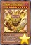 | 召唤神 艾克佐迪亚 | [怪兽|效果] 魔法师/暗 [★★★★★★★★★★] -2/0 这张卡不能通常召唤。把自己场上1只「被封印」怪兽解放的场合才能特殊召唤。 ①：这张卡的攻击力上升自己墓地的「被封印」怪兽数量×1000。 ②：这张卡不受其他卡的效果影响。 ③：自己结束阶段发动。从自己墓地选1只「被封印」怪兽加入手卡。 ④：这张卡被战斗破坏送去墓地时才能发动。手卡的「被封印」怪兽任意数量给对方观看，自己从卡组抽出给人观看的数量。 |
| 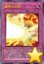 | 魔神火炎炮 | [陷阱|永续] 「魔神火炎炮」的①②的效果1回合只能有1次使用其中任意1个。 ①：以场上1只怪兽为对象才能把这个效果发动。从手卡·卡组把1只「被封印」怪兽或者1张「艾克佐迪亚」卡送去墓地，作为对象的卡回到持有者手卡。 ②：这张卡从魔法与陷阱区域送去墓地的场合，以自己墓地1只「被封印」怪兽或者1张「艾克佐迪亚」卡为对象才能发动。那张卡加入手卡。 |
 | 天翔之龙骑士 盖亚 | [怪兽|效果|融合] 龙/风 [★★★★★★★] 2600/2100 「暗黑骑士 盖亚」怪兽＋龙族怪兽 ①：这张卡只要在怪兽区域存在，卡名当作「龙骑士 盖亚」使用。 ②：这张卡特殊召唤成功的场合才能发动。从自己的卡组·墓地选1张「螺旋枪杀」加入手卡。 ③：这张卡向对方怪兽攻击宣言时才能发动。那只对方怪兽的表示形式变更。 |
 | 削命的宝札 | [魔法] 「削命的宝札」在1回合只能发动1张，这张卡发动的回合，自己不能把怪兽特殊召唤。 ①：自己直到手卡变成3张为止从卡组抽卡。这张卡的发动后，直到回合结束时对方受到的全部伤害变成0。这个回合的结束阶段，自己手卡全部送去墓地。 |
 | 邪神官 契伦·沙巴 | [怪兽|效果] 爬虫类/暗 [★★★★★★★★] 2500/0 「邪神官 契伦·沙巴」的②的效果1回合只能使用1次。 ①：自己手卡是5张以上的场合，这张卡可以不用解放作召唤。 ②：这张卡被战斗破坏送去墓地时才能发动。这张卡从墓地守备表示特殊召唤。这个效果特殊召唤的这张卡当作调整使用。 |
 | 银河蠕虫 | [怪兽|效果] 昆虫/光 [★★★] 1200/1000 ①：这张卡召唤成功时，自己场上没有这张卡以外的怪兽存在的场合才能发动。从卡组把1只3星以下的「银河」效果怪兽特殊召唤。这个效果特殊召唤的怪兽的效果无效化。 |
 | 雷普提尔的侍骑兵 | [怪兽|效果|灵摆] 恐龙/地 [★★★★] 1800/1200 3/3 ←3 【灵摆】 3→ 【怪兽效果】 这张卡向对方灵摆怪兽以外的表侧表示怪兽攻击的伤害步骤开始时：可以把那只怪兽破坏。 |
| 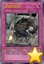 | 苦涩的逃走 | [陷阱] 把自己场上1只怪兽解放；从卡组或者墓地把和解放的怪兽的原本的种族·属性·等级相同而原本的卡名不同的1只怪兽加入手卡。 |
| 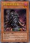 | 星兹稻草人 | [怪兽|效果] 念动力/光 [★★] 500/1800 在自己或者对方回合：可以把这张卡除外；从手卡把1只3星以上的「星兹」怪兽特殊召唤。「星兹稻草人」的这个效果1回合只能使用1次。1回合1次：可以支付500基本分，之后选择除外的1只自己的「星兹」怪兽；那只怪兽特殊召唤，那只怪兽的效果无效化，结束阶段破坏。 |
| 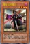 | 魔星兹邪魔女 | [怪兽|效果] 念动力/暗 [★★★★] 1900/300 在自己或者对方回合：可以把这张卡除外；从手卡把1只5星以上的「星兹」怪兽特殊召唤。「魔星兹邪魔女」的这个效果1回合只能使用1次。1回合1次，在自己或者对方回合：可以支付1000基本分；这个回合，这张卡不会被战斗或者卡的效果破坏。 |
| 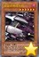 | 星兹多格战斗机 | [怪兽|效果] 机械/暗 [★★★★★★] 2000/2400 1回合1次，在准备阶段时：可以把1只「多格战斗机衍生物」（机械族·暗·6星·攻2000/守2400）特殊召唤。这张卡被战斗或者卡的效果破坏送去墓地的场合：可以把墓地的这张卡除外；从卡组把1只5星以下的「星兹」怪兽特殊召唤。 |
| 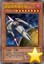 | 星兹暗黑破坏者 | [怪兽|效果] 机械/暗 [★★★★★★★★] 3000/1800 这张卡召唤·特殊召唤成功的场合：可以选择场上1只怪兽；破坏那只怪兽。不能成为对方的卡的效果的对象。这张卡被战斗或者卡的效果破坏送去墓地的场合：可以把墓地的这张卡除外；从卡组把1只7星以下的「星兹」怪兽特殊召唤。 |
| 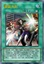 | 星兹光剑 | [魔法|装备] 念动力族「星兹」怪兽才能装备。装备怪兽的攻击力·守备力上升500，装备怪兽在同1次的战斗阶段中最多2次可以向怪兽攻击，装备怪兽向守备表示怪兽攻击的场合，给与对方为攻击力超过那个守备力的数值的战斗伤害。这张卡从场上送去墓地的场合：可以支付800基本分；把这张卡加入手卡。「星兹光剑」的这个效果1回合只能使用1次。 |
| 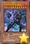 | 分身大怪兽 拉迪安 | [怪兽|效果] 恶魔/暗 [★★★★★★★] 2800/2500 可以把对方场上1只怪兽解放，从手卡把这张卡在对方场上攻击表示特殊召唤。对方场上有「大怪兽」怪兽存在的场合，可以从手卡把这张卡攻击表示特殊召唤。「大怪兽」怪兽在自己场上只能有1只表侧表示存在。1回合1次：可以把场上2个「大怪兽指示物」取除；把1只「拉迪安衍生物」（恶魔族·暗·7星·攻2800/守0）特殊召唤，这只衍生物不能作为同调素材。 |
| 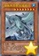 | 海龟大怪兽 加美希尔 | [怪兽|效果] 水/水 [★★★★★★★★] 2200/3000 可以把对方场上1只怪兽解放，从手卡把这张卡在对方场上攻击表示特殊召唤。对方场上有「大怪兽」怪兽存在的场合，可以从手卡把这张卡攻击表示特殊召唤。「大怪兽」怪兽在自己场上只能有1只表侧表示存在。在自己或者对方回合，对方把「海龟大怪兽 加美希尔」以外的魔法·陷阱·怪兽的效果发动时：可以把场上2个「大怪兽指示物」取除；那个发动无效并除外。 |
| 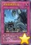 | 大怪兽捕获作战 | [陷阱|永续] 1回合1次，这张卡放置的大怪兽指示物少于3个的场合：可以选择场上1只「大怪兽」怪兽；那只怪兽变成里侧守备表示，之后给这张卡放置1个「大怪兽指示物」（最多3个）。这张卡被对方破坏送去墓地的场合：可以从卡组抽2张卡。「大怪兽捕获作战」的这个效果1回合只能使用1次。 |
 | DDD 极智王 混沌默示神 | [怪兽|效果|灵摆] 恶魔/暗 [★★★★★★★] 2700/2000 4/4 ←4 【灵摆】 4→ ①：把自己墓地2只「DD」怪兽除外才能发动。灵摆区域的这张卡特殊召唤。 【怪兽效果】 「DDD 极智王 混沌默示神」的怪兽效果1回合只能使用1次，对方回合才能发动。 ①：这张卡在手卡·墓地存在的场合，以自己场上2张表侧表示的魔法·陷阱卡为对象才能发动。那些卡破坏，这张卡特殊召唤。这个效果的发动后，直到回合结束时自己不是恶魔族怪兽不能特殊召唤。 |
 | DD 魔导贤者 牛顿 | [怪兽|效果|灵摆] 恶魔/暗 [★★★★★★★] 0/0 10/10 ←10 【灵摆】 10→ ①：自己不是「DD」怪兽不能灵摆召唤。这个效果不会被无效化。 ②：只在这张卡在灵摆区域存在才有1次，给与自己伤害的陷阱卡的效果发动的场合，可以把那个效果无效。那之后，这张卡破坏。 【怪兽效果】 「DD 魔导贤者 牛顿」的怪兽效果1回合只能使用1次。 ①：把这张卡从手卡丢弃，以「DD 魔导贤者 牛顿」以外的自己墓地1张「DD」卡或者「契约书」卡为对象才能发动。那张卡加入手卡。 |
 | DD 魔导贤者 哥白尼 | [怪兽|效果|灵摆] 恶魔/暗 [★★★★] 0/0 1/1 ←1 【灵摆】 1→ ①：自己不是「DD」怪兽不能灵摆召唤。这个效果不会被无效化。 ②：只在这张卡在灵摆区域存在才有1次，给与自己伤害的魔法卡的效果发动的场合，可以把那个效果无效。那之后，这张卡破坏。 【怪兽效果】 「DD 魔导贤者 哥白尼」的怪兽效果1回合只能使用1次。 ①：这张卡召唤·特殊召唤成功的场合才能发动。从卡组把「DD 魔导贤者 哥白尼」以外的1张「DD」卡或者「契约书」卡送去墓地。 |
| 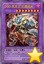 | DDD 克龙王 贝奥武夫 | [怪兽|效果|融合] 恶魔/暗 [★★★★★★★★] 3000/2500 「DDD」怪兽＋「DD」怪兽 ①：只要这张卡在怪兽区域存在，自己的「DD」怪兽向守备表示怪兽攻击的场合，给与对方为攻击力超过那个守备力的数值的战斗伤害。 ②：自己准备阶段才能发动。双方的魔法与陷阱区域的卡全部破坏。 |
 | 幻影骑士团 沾尘袍 | [怪兽|效果] 战士/暗 [★★★] 800/1000 「幻影骑士团 沾尘袍」的①②的效果1回合各能使用1次。 ①：这张卡在场上攻击表示存在的场合，以场上1只暗属性怪兽为对象才能发动。这张卡变成守备表示，作为对象的怪兽的攻击力·守备力直到对方回合结束时上升800。 ②：把墓地的这张卡除外才能发动。从卡组把「幻影骑士团 沾尘袍」以外的1张「幻影骑士团」卡加入手卡。 |
| 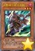 | 幻影骑士团 无声靴 | [怪兽|效果] 战士/暗 [★★★] 200/1200 「幻影骑士团 无声靴」的作为①的方法的特殊召唤1回合只能有1次，作为②的效果1回合只能使用1次。 ①：自己场上有「幻影骑士团」怪兽存在的场合，这张卡可以从手卡特殊召唤。 ②：把墓地的这张卡除外才能发动。从卡组把1张「幻影」魔法·陷阱卡加入手卡。 |
 | 幻影骑士团 破手套 | [怪兽|效果] 战士/暗 [★★★] 1000/500 「幻影骑士团 破手套」的①②的效果1回合各能使用1次。 ①：场上的这张卡为素材作超维召唤的暗属性怪兽得到以下效果。 ●这次超维召唤成功的场合发动。这张卡的攻击力上升1000。 ②：把墓地的这张卡除外才能发动。从卡组把1张「幻影骑士团」卡或者「幻影」魔法·陷阱卡送去墓地。 |
 | 幻影骑士团 断碎剑 | [怪兽|效果|超量] 战士/暗 [★★★] 2000/1000 3星怪兽×2 ①：1回合1次，把这张卡1个超维素材取除，以自己以及对方场上的卡各1张为对象才能发动。那些卡破坏。 ②：超维召唤的这张卡被破坏的场合，以自己墓地2只相同等级的「幻影骑士团」怪兽为对象才能发动。那些怪兽特殊召唤。这个效果特殊召唤的怪兽的等级上升1星。这个效果的发动后，直到回合结束时自己不是暗属性怪兽不能特殊召唤。 |
 | 幻影雾剑 | [陷阱|永续] 以场上1只效果怪兽为对象才能把这张卡发动。「幻影雾剑」的②的效果1回合只能使用1次。 ①：只要这张卡在魔法与陷阱区域存在，作为对象的怪兽不能攻击，不会成为攻击对象，效果无效化。那只怪兽从场上离开时这张卡破坏。 ②：把墓地的这张卡除外，以自己墓地1只「幻影骑士团」怪兽为对象才能发动。那只怪兽特殊召唤。这个效果特殊召唤的怪兽从场上离开的场合除外。 |
| 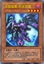 | 急袭猛禽-死灵秃鹫 | [怪兽|效果] 鸟兽/暗 [★★★★] 1000/1600 ①：1回合1次，把自己场上1只「急袭猛禽」怪兽解放，以自己墓地1张「升阶魔法」魔法卡为对象才能发动。那张卡加入手卡。这个效果的发动后，直到回合结束时自己不用「升阶魔法」魔法卡的效果不能把怪兽超维召唤。 |
| 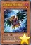 | 急袭猛禽-残存林鸮 | [怪兽|效果] 鸟兽/暗 [★] 100/100 「急袭猛禽-残存林鸮」的②的效果1回合只能使用1次。 ①：自己的「急袭猛禽」怪兽进行战斗的伤害计算时才能发动。这张卡从手卡特殊召唤。那之后，自己回复自己的场上·墓地的魔法·陷阱卡数量×100基本分。 ②：把这张卡解放才能发动。从额外卡组把1只「急袭猛禽」超维怪兽守备表示特殊召唤。这个效果特殊召唤的怪兽的效果无效化，结束阶段回到额外卡组。这个回合对方受到的战斗伤害变成0。 |
 | 急袭猛禽-卫星炮猎鹰 | [怪兽|效果|超量] 鸟兽/暗 [★★★★★★★★] 3000/2000 鸟兽族8星怪兽×2 ①：这张卡用「急袭猛禽」怪兽为素材作超维召唤成功的场合才能发动。对方场上的魔法·陷阱卡全部破坏。对方不能对应这个效果的发动把魔法·陷阱·怪兽的效果发动。 ②：把这张卡1个超维素材取除，以对方场上1只表侧表示怪兽为对象才能发动。那只怪兽的攻击力下降自己墓地的「急袭猛禽」怪兽数量×800。这个效果在对方回合也能发动。 |
| 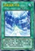 | 急袭猛禽-呼唤 | [魔法] 「急袭猛禽-呼唤」在1回合只能发动1张，这张卡发动的回合，自己不是「急袭猛禽」怪兽不能特殊召唤。 ①：以自己场上1只「急袭猛禽」怪兽为对象才能发动。那1只同名怪兽从手卡·卡组守备表示特殊召唤。 |
| 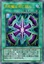 | 升阶魔法-死亡双力 | [魔法|速攻] ①：以这个回合被战斗破坏送去自己墓地的1只「急袭猛禽」超维怪兽为对象才能发动。那只怪兽特殊召唤，那只怪兽的2倍阶级的1只超维怪兽在作为对象的怪兽上面重叠当作超维召唤从额外卡组特殊召唤。 |
 | 升阶魔法-削魂之力 | [魔法] ①：把基本分支付一半，以自己墓地1只「急袭猛禽」超维怪兽为对象才能发动。那只怪兽特殊召唤，比那只怪兽阶级高2阶的1只超维怪兽在作为对象的怪兽上面重叠当作超维召唤从额外卡组特殊召唤。 |
| 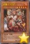 | 超量士 红层 | [怪兽|效果] 战士/炎 [★★★★★] 2200/0 【临时攻/守】 「超量士 红层」的②③的效果1回合各能使用1次。 ①：自己场上没有怪兽存在的场合，这张卡可以从手卡特殊召唤。 ②：这张卡召唤·特殊召唤成功时，以自己墓地1张「超量」卡为对象才能发动。那张卡加入手卡。 ③：这张卡送去墓地时，以「超量士 红层」以外的自己墓地1只「超量」怪兽为对象才能发动。那只怪兽特殊召唤。这个效果特殊召唤的怪兽从场上离开的场合除外。 |
| 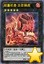 | 超量机兽 炎浆狮虎 | [怪兽|效果|超量] 机械/炎 [★★★★★] 2600/2000 5星怪兽×2 ①：没有超维素材的这张卡不能攻击。 ②：1回合1次，把这张卡1个超维素材取除，以场上1只怪兽为对象才能发动。那张卡破坏。这张卡有「超量士 红层」在作为超维素材的场合，这个效果在对方回合也能发动。 ③：1回合1次，自己主要阶段才能发动。选自己的手卡·场上1只「超量士」怪兽在这张卡下面重叠作为超维素材。 |
| 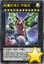 | 超量机神王 大磁炎 | [怪兽|效果|超量] 机械/光 [★★★★★★★★★★★★] 3600/3200 12星怪兽×3 ①：得到这张卡的超维素材种类的以下效果。 ●2种类以上：1回合1次，自己·对方的主要阶段把这张卡1个超维素材取除才能发动。选场上1张卡回到卡组。 ●4种类以上：这张卡不受「超量」卡以外的卡的效果影响。 ●5种类以上：对方不能用卡的效果从卡组把卡加入手卡。 ②：这张卡被送去墓地的场合才能发动。从自己墓地选「超量机兽」超维怪兽3种类各1只特殊召唤。 |
| 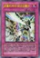 | 超量机神剑-磁炎层叠剑 | [陷阱] ①：以自己场上1只「超量」超维怪兽为对象才能把这张卡发动。这张卡当作装备卡使用给那只怪兽装备。 ②：这张卡装备的怪兽攻击力上升那只怪兽的阶级数值×100，向守备表示怪兽攻击的场合，给与对方为攻击力超过那个守备力的数值的战斗伤害。 ③：自己战斗阶段，把装备的这张卡送去墓地才能发动。这张卡装备过的怪兽在这个回合在同1次的战斗阶段中可以作3次攻击。 |
 | 古生物 皮卡虫 | [陷阱] ①：从手卡丢弃1张「古生物」卡。那之后，自己从卡组抽2张。 ②：场上的陷阱卡发动时，连锁那个发动这个效果才能从墓地发动。这张卡变成通常怪兽（水族·水·2星·攻1200/守0）在怪兽区域特殊召唤（不当作陷阱卡使用）。这个效果特殊召唤的这张卡不受怪兽的效果影响，从场上离开的场合除外。 |
 | 古生物 拟油栉虫 | [陷阱] ①：以场上1张魔法·陷阱卡为对象才能发动。那张卡破坏。 ②：场上的陷阱卡发动时，连锁那个发动这个效果才能从墓地发动。这张卡变成通常怪兽（水族·水·2星·攻1200/守0）在怪兽区域特殊召唤（不当作陷阱卡使用）。这个效果特殊召唤的这张卡不受怪兽的效果影响，从场上离开的场合除外。 |
 | 古生物 奇虾 | [怪兽|效果|超量] 水/水 [★★] 2400/0 2星怪兽×3只以上 ①：这张卡不受其他怪兽的效果影响。 ②：1回合1次，自己的魔法与陷阱区域的陷阱卡被送去墓地的场合才能发动。自己卡组最上面的卡翻开，那是陷阱卡的场合，加入手卡。不是的场合，送去墓地。 ③：这张卡有陷阱卡在作为超维素材的场合，1回合1次，把这张卡1个超维素材取除，以场上1张卡为对象才能发动。那张卡破坏。这个效果在对方回合也能发动。 |
 | 古生物 怪诞虫 | [陷阱] ①：以场上1只表侧表示怪兽为对象才能发动。那只怪兽的攻击力·守备力直到回合结束时变成一半。 ②：场上的陷阱卡发动时，连锁那个发动这个效果才能从墓地发动。这张卡变成通常怪兽（水族·水·2星·攻1200/守0）在怪兽区域特殊召唤（不当作陷阱卡使用）。这个效果特殊召唤的这张卡不受怪兽的效果影响，从场上离开的场合除外。 |
 | 古生物 加拿大虫 | [陷阱] ①：以对方场上1只表侧表示怪兽为对象才能发动。那只怪兽变成里侧守备表示。 ②：场上的陷阱卡发动时，连锁那个发动这个效果才能从墓地发动。这张卡变成通常怪兽（水族·水·2星·攻1200/守0）在怪兽区域特殊召唤（不当作陷阱卡使用）。这个效果特殊召唤的这张卡不受怪兽的效果影响，从场上离开的场合除外。 |